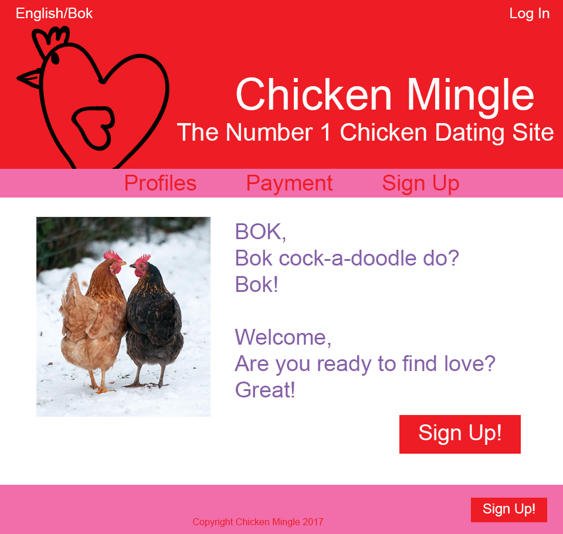

Collaborative Challenges:
Medium Challenge
-
You all spoke really well and I got the impression that you were well-prepared and knew your presentation
information. I found it helpful that you gave an example of the conversation/feedback you wanted us to take
part in during the first excercise (the verbal part of the assignment). By doing this, it gave me a better understading
of what your expectations were for us during the verbal excercise.
-
Evan's jokes were really funny, however in professional presentations (i.e. delivering presentations to companies, businesses, or bosses), it
is best to remain serious and professional. As a result, my feedback to you, would be to refrain from making foolish jokes while giving a serious presentation to your classmates and professor.
-
You did a really good job composing a clear rubric. I understood the marking scheme, and what you were
looking for based on the rubric. I think it was a great idea to add colours on to the rubric to distinguish between
the easy, medium, and hard challenges. The instructions and expectations were clearly delivered, and I was not confused during any stage of your presentation,
which therefore made it more enoyable.
Hard Challenge
-
Firstly, in order to make the website more aesthetically pleasing, I would start by centering the language options and
log-in link within the bar on the top of the page. I would also The bar on the top of the page is also unecessary, and I would
therefore eliminate it, and just keep the links on the red background. With the bar, the site looks cluttered. Less is more.
-
Currently, the navigation bar is below the header. I think that this is an appropriate location for it, however
I would extend the pink bar, so that it takes up the entire page. As well, I would center the navigation links within the pink bar.
-
I think that the black background is too dark. I would remove it and just keep the background white.
-
It is important to establish a concrete colour scheme for a website. Otherwise, it will not look aesthetically pleasing.
Therefore I would eliminate the pink bar at the top, the black background, the beige colour of the nav links, the turqiose and blue for the sign-up button, the blue in the header, and the yellow for the body font. I would instead,
Make the website colours red, purple, white, and pink and use these throughout the website as the core colour scheme.
-
I think that it is difficult to read the darker shade of red in the header. I therefore would change all of the text in the header to white, in order to make it more legible, and to stay consistent with the site's colour scheme.
-
I would make the sign-up button red and white in order to stay consistent with the site's new colour scheme I established. I would also center the sign up text within the button, and make the button smaller to make it more aesthetically pleasing for website visitors.
-
I would make both sentences in the body purple. Once again, this is to stay consistent with the site's colour scheme, and so that both sentences match each other.
-
I thik the site would benefit from me centerig the image with the body content. Otherwise it looks as though it is not alligned.
-
I would make the navigation bar font red, in order to stay with the colour scheme, and make it more legible thent he current colour which is beige.
-
To complete the site, I would put a pink footer at the bottom of the page. I would include a copyright for chicken mingle within the footer.I would also add a sign up button in the footer to enhance the site usability and guide visitors to where you want them to go.
Hard Challenge-Design
